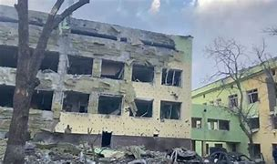
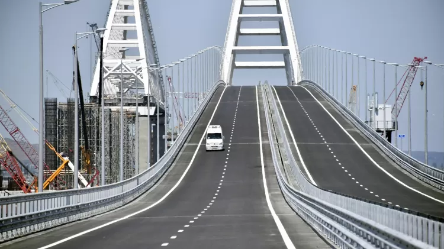
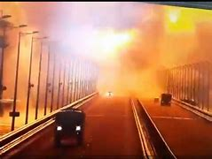

O Sofrimento dos Civis
ㅤEsta imagem mostra um hospital infantil que foi destruído pelos mísseis da Rússia, todos os “ataques justificados”
da Rússia viraliza muito já que esses edifícios não são usados pelos militares, só que nesse caso teve uma grande
viralização por motivos obvios o proprio presidente da ucrania se manifestou falando o quão absurdo isso é, o pior de
tudo e que esse tipo de ataque aumentou bastante recentemente , por causa de uma operação
especial do exército ucraniano que destruiu uma parte da ponte crimeia.
 
Principais Motivos Para o Ataque Ter Acontecido
ㅤAs forças especiais da ucrânia fez uma super operação para destruir uma parte dessa ponte, ainda é meio incerto
como aconteceu mas vendo os vídeo,
muito provavelmente foi um caminhão com explosivos super fortes, eles deram um jeito de para
um trem que tinha muitos suprimentos para os exércitos russos e muito combustível,]
com isso eles enviaram o caminhão e explodiram perto dos
tanques de combustível gerando uma grande queima, destruindo vários vagões,
já que o fogo se espalhou gerando um grande
dano, tanto nos trilhos e na estrada, os motivos desse ataques foram estratégicos,
essa ponte foi construída ilegalmente sem a permissão
da ucrânia e um dos motivos foi pra prova que o presidente da rússia não iria usar ataques nucleares,
ele estava ameaçando
a ucrânia com bombas nucleares é a ucrânia testou a rússia e obviamente a rússia não teve coragem de usar bombas nucleares,
e só continuou
atacando prédios civis, eles sabem que a primeira bomba a ser detonada na ucrânia será o fim para a rússia,
já que vai ser uma
bola de neve todos os países que apoia a ucrânia vai atacar e devastar a rússia com bomba nucleares
(força de 1 milhão de toneladas de TNT),
bombas de hidrogênio (força de 20 milhões de toneladas de TNT), será um dezastre
A Economia Mundial Sofre com a Guerra
ㅤPor mais que essa guerra seja travada diretamente só por dois países o mundo inteiro está sofrendo, a rússia por ser o maior país
do mundo ela é muito importante para a economia mundial,
por ter as maiores reservas do mundo:
gás natural,carvão,petróleo e vários recursos importantes, mas com as sanções prejudicou muito a economia russa e mundial,
um dos exemplos foi o brasil durante todo esse conflito, o preço de todos os alimentos teve um aumento de preço já que a rússia
era uma grande exportadora de adubo, mas com a guerra esse adubo acabou aumentando o preço dos alimentos,
já que os agricultores teve que recorrer a outras alternativas, com esse aumento de preço dos alimentos acabou afetando todos os serviços
de auxílio aos necessitados , antes mesmo da guerra a economia mundial já estava bem afetada por causa da pandemia e a guerra é mais
uma dificuldade, com sorte a guerra não vai piorar e tudo vai voltar ao ´´normal´´.